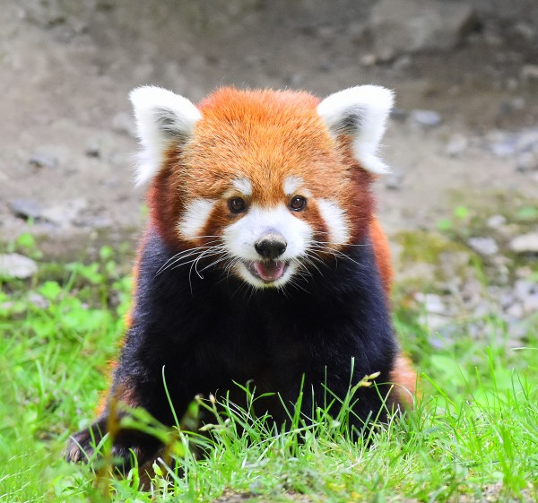

Red pandas, scientifically known as Ailurus fulgens, are small, arboreal mammals native to the eastern Himalayas and southwestern China. They have reddish-brown fur, a long, bushy tail, and a waddling gait due to their shorter front legs. They primarily eat bamboo, but their diet can also include fruits, acorns, roots, and occasionally insects and small animals. Red pandas are mostly solitary animals and are active from dusk to dawn, sleeping in trees during the day.
Despite their name, red pandas are not closely related to giant pandas; instead, they belong to their own unique family called Ailuridae. They have a unique "false thumb," which is an extended wrist bone that helps them grasp bamboo. Red pandas are also known to use their bushy tails for balance and warmth, wrapping them around themselves when they sleep. They communicate through body language and a variety of vocalizations, including a unique "twittering" sound.
Red pandas are adept climbers and can descend trees headfirst, thanks to the flexibility of their ankle joints, which can rotate 180 degrees. In a peculiar behavior, red pandas have been observed to “fake” the scent of other predators as a defense mechanism. By marking their territory with a musk similar to that of more dangerous animals, they can potentially ward off threats. Additionally, red pandas are one of the few animals that can taste artificial sweeteners, a trait they share with humans, which has been demonstrated in captivity with their surprising preference for certain sweetened foods.